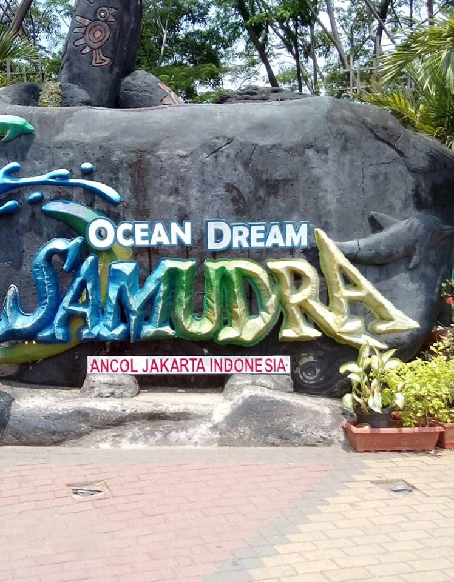

ANCOL
Ancol adalah sebuah taman hiburan di Jakarta Utara, Indonesia. Taman ini dioperasikan oleh PT Pembangunan Jaya Ancol, Tbk. lewat anak perusahaannya PT Taman Impian Jaya Ancol, yang pada gilirannya merupakan bagian dari grup Pembangunan Jaya. di wilayah Ancol, Pademangan, Jakarta Utara